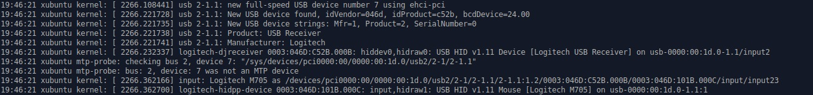
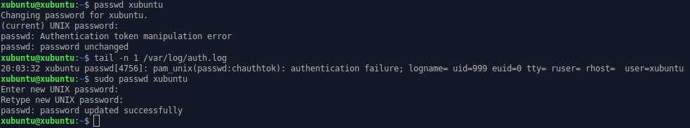
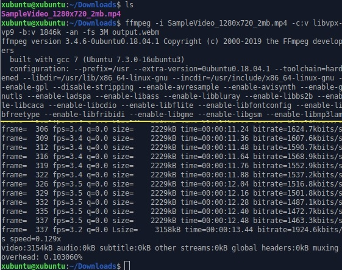
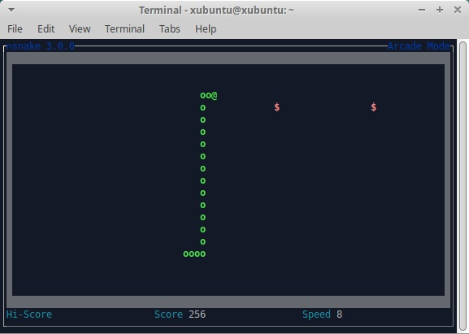
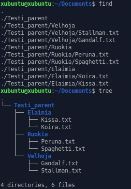

Lokimuutoksia ja apt-get
04.02.-20, Kristian KoponenTehtävänanto
Linux-palvelimet h2
- Aiheuta lokiin kaksi eri tapahtumaa: yksi esimerkki onnistuneesta ja yksi esimerkki epäonnistuneesta tai kielletystä toimenpiteestä. Analysoi rivit yksityiskohtaisesti.
- Tee unelmien apt-get -komento: yksi komentorivi, joka asentaa suosikkiohjelmasi.
- Asenna komentokehotteen paketinhallinnasta kolme itsellesi uutta komentorivillä toimivaa ohjelmaa. Kokeile kutakin ohjelmaa sen pääasiallisessa käyttötarkoituksessa.
Käytetyt laitteet
Lenovo ThinkPad X220
| Prosessori: | Intel(R) Core(TM) i5-2540M @ 2.60Ghz |
|---|---|
| Keskusmuisti: | 4GiB 1333Mhz DDR3 |
| Näytönohjain: | Intel HD Graphics 3000 |
| Käyttöjärjestelmä: | Windows 10 64-bit |
SanDisk Ultra USB 3.0 32 GB
xubuntu 18.04.3 amd64Lokimerkinnät
Muokattu 08.03.2020 (Korjaus)
Tarkoituksena oli luoda lokiin kaksi tapahtumaa. Toinen onnistuneesta tapahtumasta ja toinen epäonnistuneesta. Avasin järjestelmälokin komennolla
$ cat /var/log/syslog
Nähdäkseni viimeiset 10 riviä voin käyttää komentoa
$ tail /var/log/syslog
Käytän läppärissäni langatonta hiirtä, joten yhdistin sen koneeni USB-porttiin. Mietin näkyisikö esimerkiksi tämä tapahtuma lokissa ja siellähän se näkyi ja tietoa oli enemmän kuin ”laite yhdistetty”. Esimerkiksi mitä liitettiin, miltä valmistajalta ja hiiren mallikin. Laskisin tämän onnistuneeksi tapahtumaksi lokissa.
{kind=link}
(Klikkaa kuva suuremmaksi)
Seuraavaksi yritin luoda live-Linuxin oletuskäyttäjälle ”xubuntu” uutta salasanaa, jotta voin aiheuttaa tämän avulla virheen lokissa. Virhe tulikin jo salasanan luonnissa. Syötin komentoriville
$ passwd xubuntu
Tämä toiminto ei onnistunut. Katsoin virheilmoituksen auth.logista komennolla
$ tail /var/log/auth.log
Virhe johtui autentikointi-rajoitteesta. Olin käyttänyt jo salasanan vaihtamisessa "väärää salasanaa", eli kirjoittanut uutta salasanaa kohtaan, jossa oli käytettävä vanhaa salasanaa ennen sen vaihtamista. Päädyin kokeilemaan salasanan muuttamista pääkäyttäjän oikeuksilla, jolloin vanhaa salasanaa ei tarvinnut syöttää.
{kind=link}
(Klikkaa kuva suuremmaksi)
Unelmien apt-get -komento
Alla olevalla komennolla saan yleishyödyllisiä ohjelmia asennettua.
$ sudo apt-get update && sudo apt-get install vlc ffmpeg gimp blender pinta deluge
- VLC - Mediantoisto
- FFmpeg - Kokoelma ohjelmistoja, joilla voidaan käsitellä videota, ääntä ja muita mediatiedostoja komentorivillä.
- Blender - Avoin3D-mallinnus ja animointi-työkalu.
- GIMP - Ammattitasoinen kuvankäsittelyohjelma.
- Pinta - Yksinkertaisempi ohjelma nopeaan kuvankäsittelyyn. Esim. kroppaus ja kuvien yhdistely.
- Deluge - Bittorrent asiakasohjelma.
Muita ohjelmia kuten Spotify voidaan asentaa Snapilla, joka tulee Ubuntuun valmiiksi asennettuna. Mikäli sitä ei kuitenkaan ole asennettu, se voidaan hakea komennolla
$ sudo apt-get install snapd
Komentorivillä toimivat ohjelmat
Tässä on listattuna kolme ohjelmaa, joita voidaan käyttää Linuxin terminaalista käsin.
$ sudo apt-get install ffmpeg
Olen aiemmin käyttänyt FFmpegin toiminnallisuuksia GUI wrapperin avulla videotiedostojen muodon kääntämiseen, mutta konsolista käsin sen käyttö on yksinkertaisuudessaan myös helppoa. Käytän todennäköisesti tulevaisuudessa kuitenkin wrapperia, sillä se yhdistää myös kätevästi AviSynthin editointi-mahdollisuuden.
{kind=link}
nSnake - matopeli
$ sudo apt-get install nsnake
Peli toimii hyvin. Asetuksia voi muuttaa ennen pelin alkua. Esim. madon nopeus, seinät, syötävien ruokien määrä, jne. Pelatessa ongelmana on kuitenkin se, että mato liikkuu nopeammin ylös ja alas kuin sivuille. 6/10
{kind=link}
Tree - QoL konsolitoiminto
$ sudo apt-get install tree
Yksinkertaisuudessaan lisää komennon "tree", joka näyttää alakansiot ja tiedostot helpommin luettavassa rakenteessa kuin "find".
{kind=link}
Lähteet
http://terokarvinen.com/2020/linux-palvelimet-2020-alkukevat-kurssi-ict4tn021-3010/#h2
https://www.cyberciti.biz/faq/ubuntu-linux-gnome-system-log-viewer/
https://itsfoss.com/nsnake-play-classic-snake-game-linux-terminal/
https://www.reddit.com/r/commandline/comments/9b426l/best_terminal_apps/
https://ffmpeg.org/